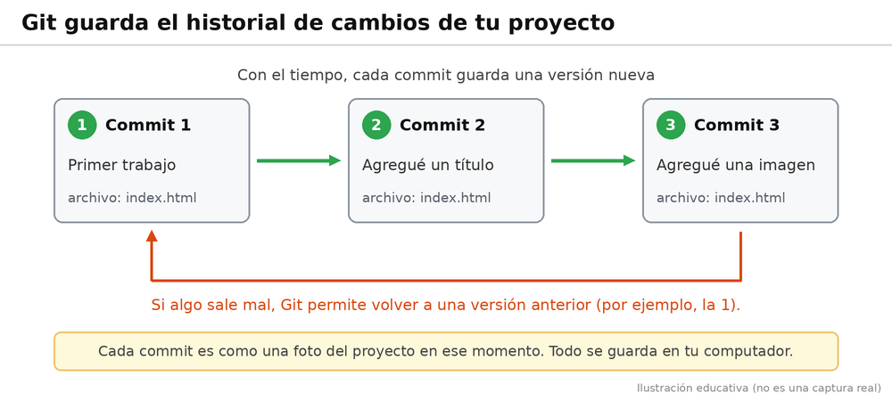
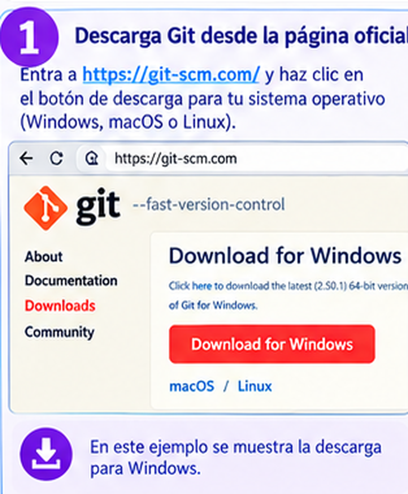
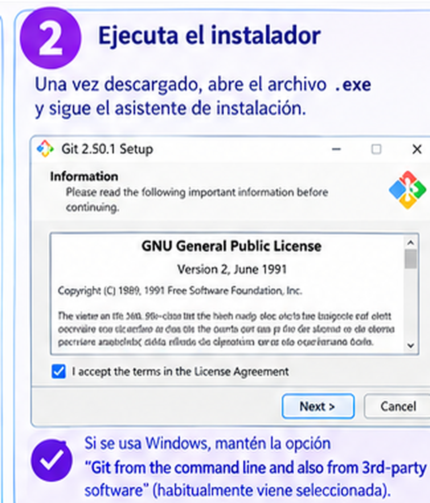
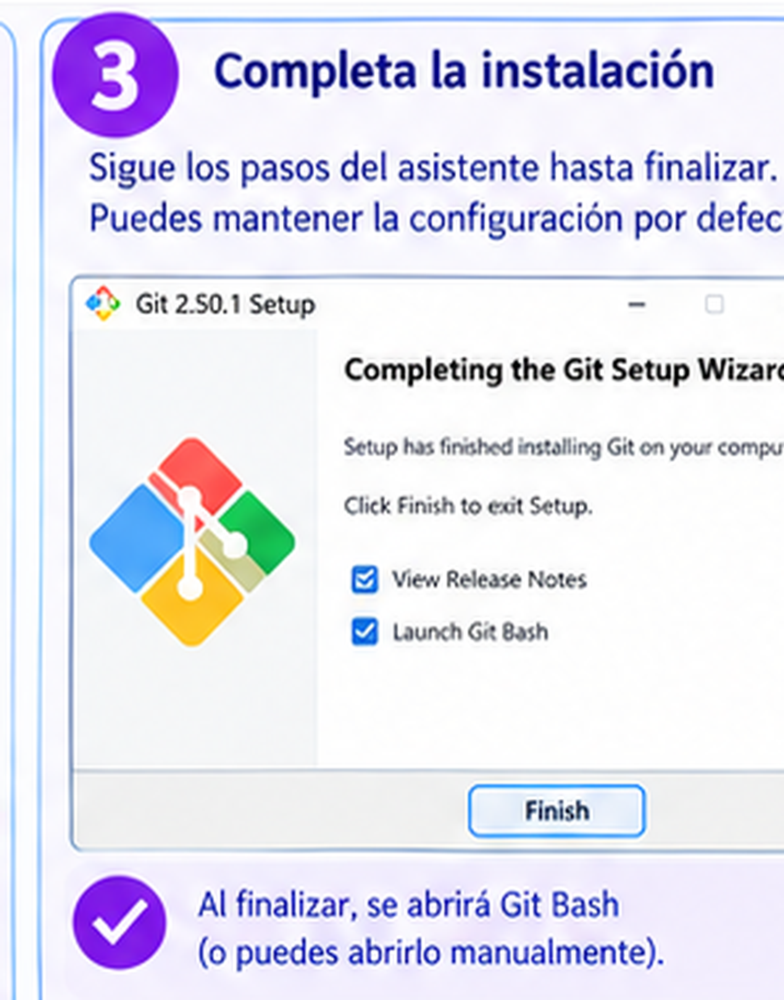
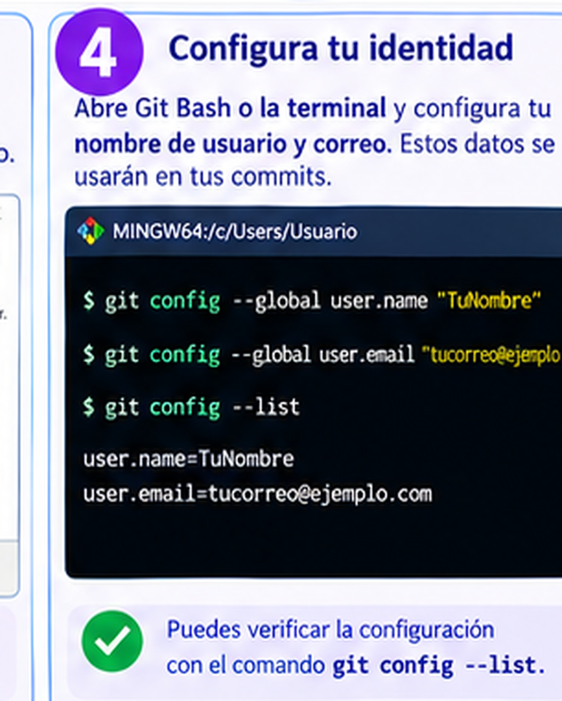

Git es una herramienta que nos permite llevar un registro de los cambios que hacemos en los archivos de un proyecto.
Por ejemplo, si estamos creando una página web y modificamos su contenido, Git nos ayuda a guardar un historial de esos cambios.

Sirve para iniciar un repositorio de Git en una carpeta.
Ejemplo:
git init

Sirve para revisar el estado de los archivos del proyecto.
Ejemplo:
git status

Sirve para preparar los archivos nuevos y modificados para el próximo registro de cambios.
Ejemplo:
git add .

Sirve para guardar un registro de los cambios preparados.
Ejemplo:
git commit -m "Primer trabajo"

Primero hacemos cambios en nuestros archivos. Después usamos git add para preparar esos cambios y git commit para registrarlos. Así podemos mantener un historial de nuestro trabajo.
Git funciona en nuestro computador, pero también podemos conectarlo con GitHub para compartir nuestros proyectos.
Imagina que creaste una página llamada index.html. Si quieres comenzar a registrar sus cambios, puedes escribir estos comandos en la terminal:
git init
git add index.html
git commit -m "Creando mi primera página"
Con estos comandos inicias Git, preparas el archivo y registras los cambios realizados.
Antes de usar los comandos, Git debe estar instalado en nuestro computador. Estos pasos son para Windows, que es el sistema que se muestra en las imágenes. Si usamos macOS o Linux, la página oficial de Git nos indica cómo instalarlo en esos sistemas.
Abrimos el navegador y entramos a la página oficial: https://git-scm.com/. Buscamos el botón rojo que dice Download for Windows y hacemos clic en él. Si usamos macOS o Linux, hacemos clic en esos nombres, que aparecen debajo del botón. Se descargará un archivo con la extensión .exe, que normalmente queda en la carpeta Descargas.

Abrimos la carpeta Descargas y hacemos doble clic en el archivo .exe. Si Windows pregunta si permitimos que la aplicación haga cambios, elegimos Sí. Se abre una ventana llamada Git Setup. La primera pantalla muestra la licencia del programa: solo es información, no tenemos que cambiar nada. Hacemos clic en el botón Next > (Siguiente).
En las pantallas que siguen podemos dejar las opciones como vienen por defecto y seguir presionando Next >. Hay una opción importante: Git from the command line and also from 3rd-party software. Esa opción debe quedar seleccionada (normalmente ya viene así), porque permite escribir comandos de Git en la terminal.

Cuando el instalador termina, aparece la pantalla Completing the Git Setup Wizard, que significa que Git ya quedó instalado. Dejamos marcada la casilla Launch Git Bash si queremos abrir la terminal de Git de inmediato y hacemos clic en Finish.

Para comprobar que todo salió bien, escribimos este comando en Git Bash y presionamos Enter:
git --version
Si aparece un texto como "git version 2.50.1", Git está instalado. El número puede ser distinto según la versión que hayamos descargado.
Git guarda en cada commit el nombre y el correo de quien lo hizo. Por eso, la primera vez debemos decirle quiénes somos. Abrimos Git Bash (lo buscamos en el menú Inicio de Windows) y escribimos estos dos comandos, uno por uno, presionando Enter después de cada uno. Cambiamos TuNombre y tucorreo@ejemplo.com por nuestros datos reales, pero dejamos las comillas:
git config --global user.name "TuNombre"
git config --global user.email "tucorreo@ejemplo.com"
Es recomendable usar el mismo correo con el que crearemos la cuenta de GitHub. La palabra --global significa que estos datos se guardan para todos los proyectos de este computador, así que solo hay que hacerlo una vez.

Para comprobar que quedó guardado, escribimos:
git config --list
En la lista que aparece deben verse las dos líneas user.name y user.email con los datos que escribimos. Si están ahí, Git ya sabe quiénes somos.